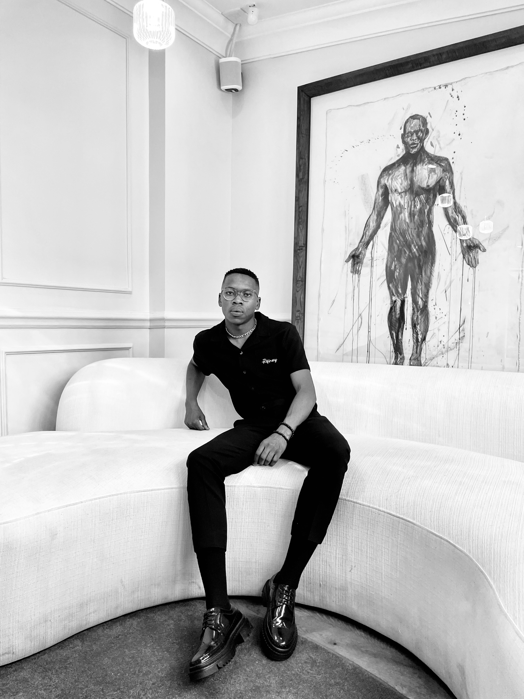
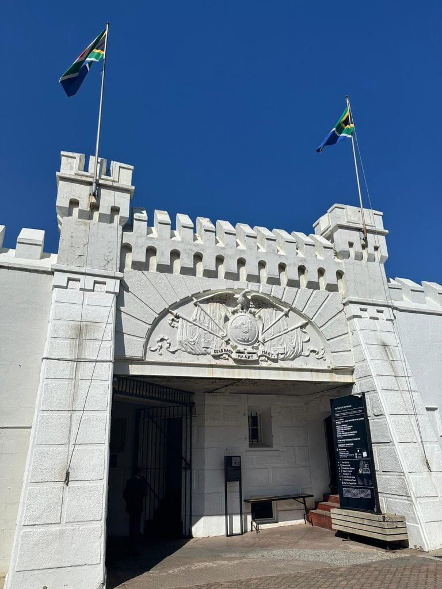

Intro
Mothusi Molelekeng is a multi-talented individual, wearing hats as a content creator, DJ, and music producer. Beyond his creative pursuits, he holds a BSc degree in Environmental Science and Geography, showcasing his commitment to understanding and potentially mitigating environmental challenges while expressing himself through music and content creation.

City I Would Like to Visit
I would love to visit Ibiza because Ibiza, known as the ultimate party island, offers a vibrant atmosphere that attracts visitors from around the globe. Its stunning beaches with crystal-clear waters are perfect for sunbathing and water sports enthusiasts. The island's legendary nightlife scene, featuring world-renowned clubs and DJs, promises unforgettable evenings of dancing and entertainment. Beyond the parties, Ibiza boasts a rich cultural heritage, with charming old towns, historic sites, and local markets to explore. Nature lovers can indulge in the island's breathtaking landscapes, from lush pine forests to rugged coastal cliffs. Whether seeking relaxation, adventure, or vibrant nightlife, Ibiza offers an experience like no other, making it a must-visit destination for travelers of all interests.. Here's a photo of the city:

Foreign Language I Would Like to Learn
I would like to learn French Language because Learning French offers numerous benefits both personally and professionally. Firstly, it opens doors to a rich cultural heritage, from literature and art to cuisine and cinema, allowing for a deeper understanding and appreciation of French-speaking cultures worldwide. Secondly, it enhances communication skills, as French is spoken by millions globally and is an official language of diplomacy, making it valuable for international travel and career opportunities. Additionally, mastering French can boost cognitive abilities, as learning a new language improves memory, problem-solving, and multitasking skills. Finally, proficiency in French can significantly broaden one's career prospects, particularly in industries such as international business, tourism, and diplomacy, where bilingualism is highly valued. Overall, learning French not only expands linguistic capabilities but also enriches personal and professional experiences in a globalized world.. Here are some basic phrases:
| English |
French |
| Hello |
Bonjour |
| Thank you |
Merci |
| Goodbye |
Au revoir |
Favorite Subjects
Full Stack Web Development for 4IR
Full stack web development for a 4IR (Fourth Industrial Revolution) module involves creating both the frontend and backend components of a web application using modern technologies and frameworks. This includes designing the user interface (UI), implementing client-side functionality with languages like HTML, CSS, and JavaScript, as well as building server-side logic using frameworks like Node.js, Django, or Flask. Additionally, it may involve integrating databases, APIs, and other third-party services to create a fully functional and responsive web application capable of meeting the demands of the Fourth Industrial Revolution, which emphasizes automation, connectivity, and data-driven decision-making.

Engineering Business Systems for 4ir
Engineering Business Systems for the Fourth Industrial Revolution (4IR) module focuses on integrating engineering principles with advanced technologies characteristic of the Fourth Industrial Revolution. It examines how businesses utilize emerging technologies like AI, IoT, blockchain, and automation to optimize processes, enhance productivity, and create innovative products and services. The module emphasizes the synergy between engineering practices and digital solutions to adapt to the evolving industrial landscape and drive sustainable growth in the 4IR era.

Agile Rapid Skills Acquisition
The Agile Rapid Skills Acquisition (ARSA) module is a streamlined framework for quickly learning new skills, inspired by Agile methodologies. It emphasizes iterative, adaptable learning cycles, frequent feedback, and collaboration. ARSA prioritizes hands-on experience and practical application to accelerate skill development efficiently.

historic-places
Gold Reef City
Gold Reef City is a popular theme park and entertainment complex located in Johannesburg, South Africa. It is built on the site of a former gold mine, reflecting the city's rich mining history. Visitors can experience a range of attractions, including thrilling rides, historic exhibits, live shows, and a replica of an old mining town. The park offers a blend of entertainment and education, giving visitors a glimpse into the region's past while providing modern-day fun for the whole family. It's a unique destination that combines adventure, history, and culture, making it a must-visit for tourists and locals alike.

Mandela House. 727.
The Mandela House, also known as the Nelson Mandela National Museum, is located in Soweto, Johannesburg, South Africa. It was the former residence of Nelson Mandela and his family from 1946 to the 1990s. The house is now a museum dedicated to preserving the legacy of Nelson Mandela and the struggle against apartheid in South Africa. Visitors can explore the modest red-brick house where Mandela lived before his imprisonment, gaining insights into his life, activism, and the broader historical context of apartheid-era South Africa. The museum features various exhibits, photographs, and artifacts related to Mandela's life, including his time in prison and his role in South Africa's transition to democracy. It stands as a symbol of resilience, perseverance, and the fight for justice.

Constitution Hill
Constitution Hill is a historic site in Johannesburg, South Africa, known for its significance in the country's struggle against apartheid. Originally a fort built by the British colonial government in the late 19th century, it later became a notorious prison complex where many political activists, including Nelson Mandela, were held captive during the apartheid era. Today, Constitution Hill serves as a museum and heritage precinct, showcasing exhibits and interactive displays that document South Africa's journey to democracy and the human rights violations that occurred within its walls. It also houses the Constitutional Court of South Africa, symbolizing the country's commitment to justice and equality under the rule of law.
